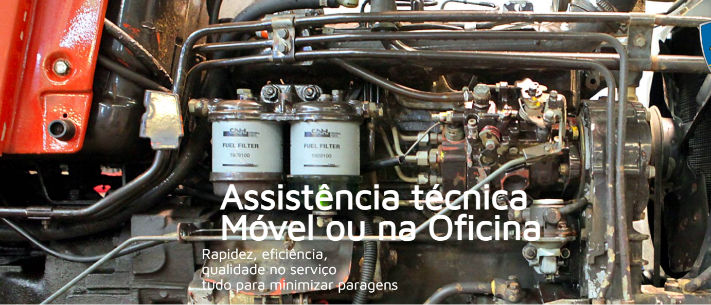

Quem Somos
A TRATUP nasceu da reunião da ambição, empenho e vontade de abraçar um empreendimento que objetiva alicerçar uma parceria constante com os nossos clientes.
Pretendemos reforçar a confiança dos nossos clientes e conquistar novos com a nossa premissa expressa na mensagem da empresa “Sempre Perto de Si”. Os sócios fundadores desta empresa estão neste negócio desde sempre. Têm consciência da exigência da evolução constante, para acompanhar a inovação técnica dos equipamentos e serviços e aceitam-na com a motivação diária de evolução contínua.
A TATRUP apostou em implementar um serviço após-venda de excelência.
Disponibiliza o serviço de técnicos especializados com larga experiência no mercado de máquinas comercializadas pelo nosso departamento de vendas.

Voltar ao Topo
Nossos Produtos
Voltar ao Topo
A FIMA 2016 (Feira Internacional de Maquinaria Agrícola) decorre em Zaragoza, Espanha entre 16 e 20 de fevereiro.
Voltar ao Topo
Nossa Localização
Voltar ao Topo
2023 - Todos os direitos reservados